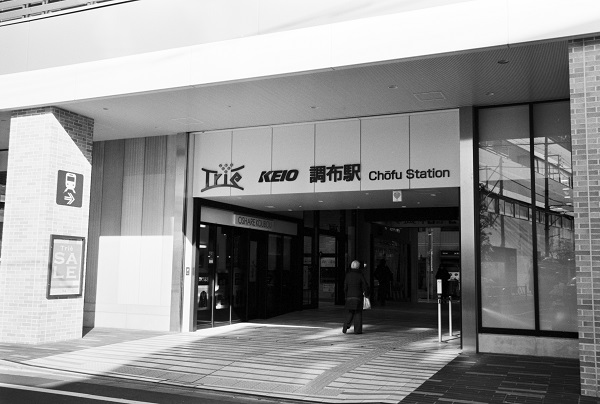

KO18_京王線
調布駅 Choufu
布田駅
←← 京王線 →→
西調布駅
京王相模原線 →→
京王多摩川駅
2019/4/4 ﾍｷｻｰRF ｶﾗｰｽｺｰﾊﾟｰ25mm ｱｸﾛｽ
2019/4/4 ﾍｷｻｰRF ｶﾗｰｽｺｰﾊﾟｰ25mm ｱｸﾛｽ
2019/4/4 ﾍｷｻｰRF ｶﾗｰｽｺｰﾊﾟｰ25mm ｱｸﾛｽ

2018/1/16 ﾐﾉﾙﾀCLE 35mm ｱｸﾛｽ
2018/1/16 ﾐﾉﾙﾀCLE 35mm ｱｸﾛｽ
戻る
ﾎｰﾑ